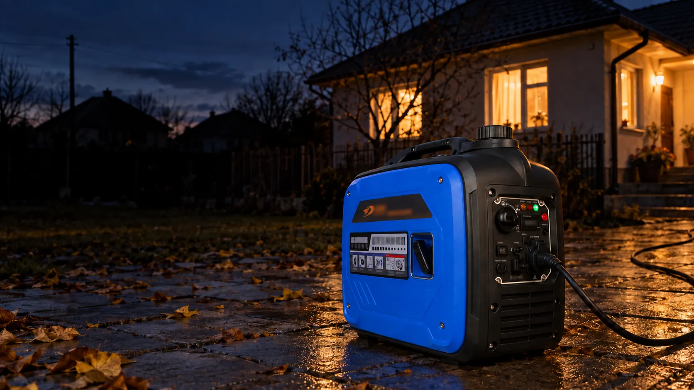
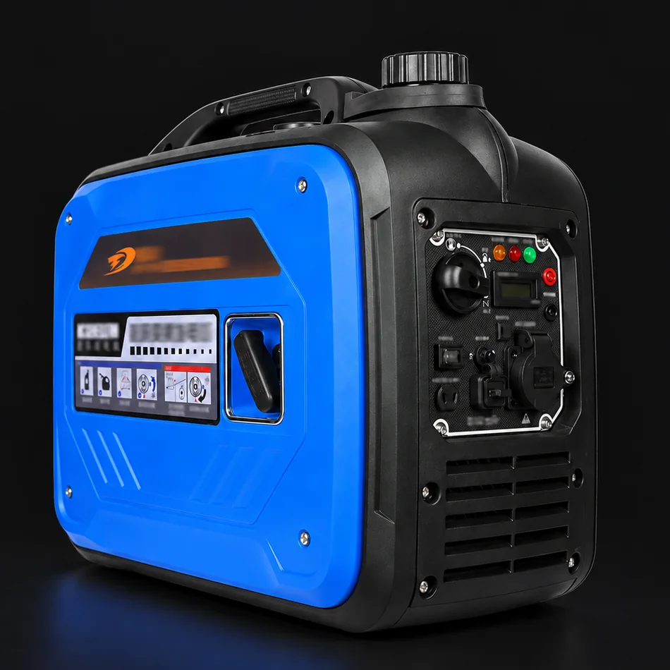
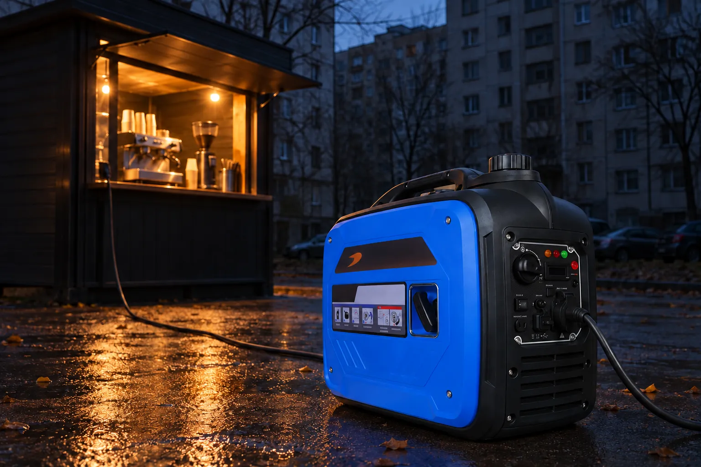
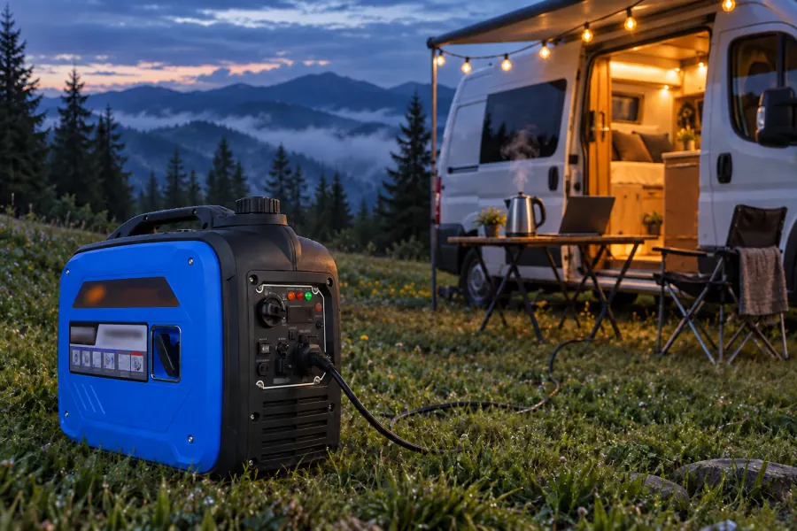
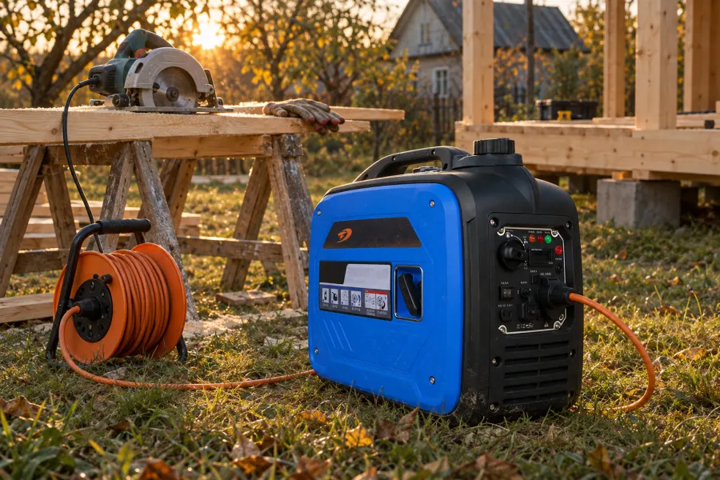

Інверторний генератор · 230 В · 2,8-3,8 кВт
У всіх графік. У вас світло.
Тихий бензиновий генератор, який тримає котел, холодильник, роутер і світло, поки вся вулиця сидить у темряві. Видає рівну синусоїду 230 В, тож техніка працює як від мережі. А гуде не гучніше за звичайну розмову: 55-60 дБ на відстані семи метрів.
- 2,5-3,5 кВт
- тривалої потужності, залежно від версії
- 55-60 дБ
- на відстані 7 м, у закритому корпусі
- 6-6,5 л
- бак, звичайний бензин А-92 чи А-95
- 19-22 кг
- одна ручка, вміщається в багажник
01Чиста напруга
Котлу байдуже, звідки струм. Але не байдуже, який він.
У простого відкритого генератора напруга й частота залежать від обертів двигуна. Навантаження стрибнуло, оберти просіли, і разом з ними просіла синусоїда. Лампочка цього не помітить. А от плата газового котла, інверторний холодильник чи блок живлення ноутбука такого не люблять, і часом за це доводиться платити ремонтом.
Інверторний генератор влаштований інакше. Спочатку він випрямляє струм з обмотки, а потім електроніка заново збирає з нього рівну синусоїду 230 В і 50 Гц, незалежно від того, як крутиться двигун. Тому до нього спокійно підключають котел, телевізор, ноутбук і роутер.
- Опаленнягазовий котел, циркуляційний насос
- Кухняхолодильник, мікрохвильовка, чайник
- Зв’язок і роботароутер, ноутбук, телевізор, зарядки
Схема для наочності, а не запис осцилографа.
02Тиша
Сусіди дізнаються про генератор, коли побачать у вас світло.
у версій 2800 і 3200 Вт, 60 дБ у 3500 і 3800 Вт. На відстані 7 м, за даними продавця.
цей генератор
відкритий генератор, зазвичай
Двигун закритий у суцільний корпус, а вихлоп виходить через глушник. Перемикач Eco змушує генератор скидати оберти, коли навантаження мале: вночі, коли працюють тільки котел, холодильник і роутер, він не реве на повну, а рівно бурчить.
Для порівняння: кожні плюс 10 дБ вухо сприймає приблизно як удвічі гучніший звук. Тобто 60 і 70 дБ відрізняються не «трохи», а вдвічі. Саме тому відкритий будівельний генератор чути через два двори, а цей через паркан.
03Калькулятор
Позначте, що хочете вмикати. Підкажемо версію і скільки піде бензину.
1Що працює одночасно
Потужності типові. Точну цифру вашого приладу видно на наліпці ззаду чи знизу.
2Ваш графік відключень
Натисніть на години, коли світла немає. Темні клітинки: мережа є. Жовті: працює генератор.
Це оцінка, а не паспортна цифра. Рахуємо за типовою витратою інверторних генераторів з двигуном близько 150 см³: приблизно 0,35 л/год у режимі Eco майже без навантаження і плюс 0,33 л/год на кожен кіловат середнього навантаження. Чайник і мікрохвильовка працюють хвилини, тому в середнє навантаження вони входять малою часткою. Реальна витрата залежить від бензину, погоди і ваших звичок.
04Версії
Дивіться на номінал, а не на цифру в назві.
На AliExpress версії підписані піковою потужністю: 2800, 3200, 3500 і 3800 Вт. Стільки генератор видає кілька секунд, поки стартує компресор холодильника чи насос. Годинами він тримає номінальну потужність, вона на 200-300 Вт менша. Плануйте навантаження саме за нею і лишайте запас близько 20%.
| Параметр | підходить вам2800 Вт | підходить вам3200 Вт | підходить вам3500 Вт | підходить вам3800 Вт |
|---|---|---|---|---|
| Номінальна, тривало | 2500 Вт | 3000 Вт | 3200 Вт | 3500 Вт |
| Пікова, на старті | 2800 Вт | 3200 Вт | 3500 Вт | 3800 Вт |
| Шум на 7 м | 55 дБ | 55 дБ | 60 дБ | 60 дБ |
| Бак | 6,5 л | 6 л | 6 л | 6 л |
| Вага | 19 кг | 22 кг | 22 кг | 22 кг |
| Габарити | 50 × 28 × 48 см | 50 × 31 × 50 см | 50 × 31 × 50 см | 50 × 31 × 50 см |
| Маркування на корпусі | 3000i | 3500i | 3800i | 4000i |
| Кому | котел, холодильник, світло, зв’язок | те саме плюс мікрохвильовка чи кавоварка | те саме плюс чайник на 2 кВт | майже весь будинок, але по черзі |
| Замовлення | Обрати 2800 | Обрати 3200 | Обрати 3500 | Обрати 3800 |
Однакові для всіх версій: 230 В і 50 Гц, чиста синусоїда, ручний запуск, режим Eco, паралельне підключення, виходи 12 В і USB.
05Будова
Усе керування на одній панелі.

- РучкаОдна, по центру. 19-22 кг несете однією рукою, генератор не перекошує.
- Кришка бакаБак на 6-6,5 л, у горловині сітка-фільтр і червона мітка, до якої лити.
- Перемикач 3-в-1Одна ручка замість трьох: вимкнено, робота і повітряна заслінка для холодного пуску. У положенні «вимкнено» перекривається і паливо.
- Індикатори і дисплейЖовтий: мало масла. Червоний блимає: перевантаження. Зелений: генератор працює. Поруч цифровий дисплей і кнопка скидання.
- Розетка 230 ВЄвропейська, із заземленням і кришкою, 16 А. Для кількох приладів знадобиться подовжувач.
- Eco, 12 В, USB, паралельПеремикач Eco, вихід 12 В / 8,3 А для автомобільного акумулятора, USB для телефону, роз’єм для паралельного підключення другого генератора і клема заземлення.
- Ручний стартерШнуровий, у ніші збоку. Акумулятора немає, тож нічому сідати на морозі.
- Жалюзі охолодженняПовітря заходить тут і під днищем. Не ставте впритул до стіни і не накривайте. Від дощу краще навіс над генератором, а не плівка на ньому.
06Де стане в пригоді
Від котла вдома до кавомашини у дворі.



07Перший запуск
Приходить без масла. Це нормально, але про це треба знати.
- Масло0,35-0,4 л SAE 10W-40 або 15W-40, клас API SJ чи вище. Генератор на рівній поверхні. Запуск без масла вбиває двигун назавжди.
- БензинНеетилований А-92 або А-95, до червоної мітки в горловині. Під саму кришку не доливайте: бензин розширюється, коли нагрівається.
- ЗаслінкаПеремикач 3-в-1 у положення заслінки. Для теплого двигуна цей крок можна пропустити.
- ШнурПотягніть стартер плавно до упору, потім різко. Як тільки двигун завівся, переведіть перемикач у робоче положення.
- ТехнікаДайте попрацювати хвилину і тільки тоді підключайте прилади. Найпотужніший вмикайте першим, дрібні потім.
Обслуговування по мотогодинах
- 20 годПерша заміна масла, після обкатки.
- кожні 50 год або 3 місяціМасло, чистка повітряного фільтра й іскрогасника.
- кожні 100 год або рікСвічка A5RTC із зазором 0,7-0,8 мм, чистка бака і паливного фільтра.
- у пилу і на повнуМасло кожні 25 год, повітряний фільтр чистити кожні 10.
Не запускаєте довше місяця? Замініть бензин на свіжий. Якщо генератор стоятиме понад два місяці, злийте паливо і з карбюратора. Так радить інструкція виробника.
08Безпека
Тільки надворі. Навіть «на хвилинку».
У вихлопі будь-якого бензинового генератора є чадний газ. У нього немає ні кольору, ні запаху, а в закритому приміщенні він вбиває за лічені хвилини. Тому генератор не ставлять у будинку, гаражі, підвалі, під’їзді чи на закритому балконі, навіть з відчиненими дверима.
- За 3-4 м від дверей і вікон, вихлопом від будинку.
- Щонайменше 1 м від усього, що горить.
- Заправляйте тільки заглушений і охололий двигун.
- До щитка будинку підключає електрик, через перекидний рубильник. Інакше струм піде назад у лінію, де можуть працювати люди.
- Датчик чадного газу в будинку коштує небагато і рятує життя.
09Характеристики
Усі цифри в одному місці.
Електрика
- Напруга і частота
- 230 В, 50 Гц
- Форма напруги
- чиста синусоїда, інвертор
- Номінальна потужність
- 2500 / 3000 / 3200 / 3500 Вт
- Пікова потужність
- 2800 / 3200 / 3500 / 3800 Вт
- Розетка
- 1 × 230 В, 16 А, із заземленням
- Постійний струм
- 12 В, 8,3 А
- USB
- 5 В, для телефону
- Паралельне підключення
- є
Двигун і пальне
- Двигун
- 4-тактний, OHV, повітряне охолодження
- Робочий об’єм
- 149 см³, за описом продавця
- Запуск
- ручний, шнуровий стартер
- Пальне
- неетилований бензин, А-92 і вище
- Бак
- 6,5 л у версії 2800 Вт, 6 л в інших
- Масло
- 0,35-0,4 л, SAE 10W-40 або 15W-40, API SJ і вище
- Свічка
- A5RTC, зазор 0,7-0,8 мм
Корпус
- Габарити
- 50 × 28 × 48 см (2800 Вт), 50 × 31 × 50 см (інші)
- Вага
- 19 кг (2800 Вт), 22 кг (інші)
- Посилка
- 56 × 37,8 × 53 см, близько 25 кг
- Шум на 7 м
- 55 дБ (2800, 3200 Вт), 60 дБ (3500, 3800 Вт)
Функції та умови
- Режим Eco
- є
- Індикатори
- мало масла, перевантаження, робота
- Дисплей
- цифровий
- Температура роботи
- від -15 до +40 °C
- Висота
- до 1500 м над рівнем моря
- Де працює
- тільки на відкритому повітрі
Джерела: сторінка товару на AliExpress, таблички характеристик кожної версії і PDF-інструкція виробника.
10У коробці
Що приїде
- Генератор
- Кабель 12 В із затискачами «крокодил»
- Перехідник вилки EU/US
- Запасна свічка запалювання
- Свічний ключ
- Лійка для масла
Масла в комплекті немає. Купіть пляшку 10W-40 наперед, щоб запустити генератор у день доставки.
11Перший відгук
Залив масло й бензин, завівся з першого разу. Я задоволений: міцний і достатньо тихий.
12Питання
Питають найчастіше.
Чи потягне газовий котел?
Так. Автоматика котла і циркуляційний насос споживають 100-200 Вт, а рівна синусоїда інвертора для їхньої електроніки якраз те, що треба. Якщо котел живиться від щитка без вилки, попросіть електрика вивести його на розетку або поставити перекидний рубильник.
Яку версію брати?
Порахуйте в калькуляторі. Для котла, холодильника, роутера і світла вистачить 2800 Вт. Якщо хочете разом з ними чайник, мікрохвильовку чи бойлер, дивіться на 3500 або 3800 Вт.
Скільки бензину піде за ніч?
Коли працюють котел, холодильник, роутер і світло (300-500 Вт), виходить орієнтовно 0,45-0,5 л на годину. За вісім годин ночі це близько 4 л, тобто бака вистачає з запасом. Під ваш графік точніше порахує калькулятор.
Чи заведеться взимку?
Робочий діапазон від -15 до +40 °C. У мороз заводьте із заслінкою і використовуйте масло 10W-40. Нижче -15 °C запуск помітно важчий, тому зберігайте генератор у сухому приміщенні і виносьте надвір перед запуском.
Є електростартер або пульт?
Ні, тільки ручний шнуровий стартер. Зате немає акумулятора, який сідає на морозі чи після кількох місяців простою.
Можна заряджати автомобільний акумулятор?
Так, для цього є вихід 12 В / 8,3 А і кабель із «крокодилами» в комплекті. Струм невеликий, тож розряджений акумулятор заряджатиметься кілька годин.
Що дає паралельне підключення?
Два такі генератори можна з’єднати спеціальним кабелем, щоб отримати більше потужності на одну лінію. Кабель у комплект не входить, його купують окремо.
Чи доставляють в Україну і скільки чекати?
Так, стандартною доставкою AliExpress, зазвичай 10-20 днів. Посилка важить близько 25 кг і має розмір 56 × 38 × 53 см, тому доставка помітна в ціні. Точну суму і термін AliExpress покаже для вашої адреси ще до оплати.
А якщо щось не так?
Замовлення захищене програмою захисту покупців AliExpress: якщо товар не приїхав або не відповідає опису, відкривається спір. Інструкція виробника не покриває гарантією поломки через порушення правил експлуатації і самостійний ремонт, тож перший запуск робіть за кроками вище.
Чи працює в горах?
До 1500 м над морем без змін. Вище двигуну бракує повітря, потужність падає, і карбюратор варто перенастроїти в сервісі.
Графік складають без вас. Світло вмикаєте ви.
Ціну й доставку AliExpress покаже для вашої адреси. Доставка в Україну зазвичай 10-20 днів.